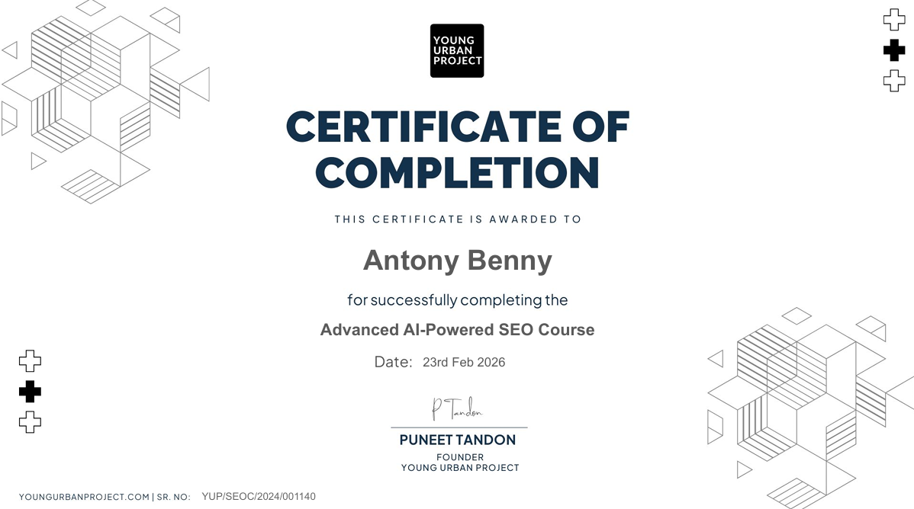
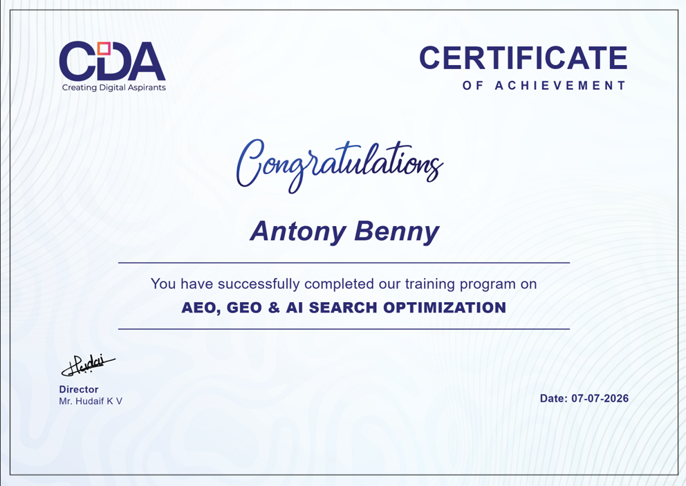

I'm Antony Benny, an SEO expert based right here in Thrissur. Whether you run a local business or an online store and want help getting found on Google.
I'm Antony Benny, an SEO consultant based in Thrissur, Kerala. My work covers on-page, technical, off-page, and local SEO, applied the same way whether a client is here in Thrissur, elsewhere in Kerala, or further out.
I'm also the Co-Founder & SEO Lead of Bamboost LLP. For the fuller picture of my background, education, and how I approach client work, the About page covers that in depth.
Beyond client work, I've completed structured training in two areas of SEO that keep evolving quickly - including how AI systems are changing search itself.

View CertificateYoung Urban Project
Completed February 2026

View CertificateCreating Digital Aspirants (CDA)
Completed July 2026
These aren't the main reason to work with me - the SEO work itself is - but they're part of how I keep up as search keeps changing.
The same core SEO work I do everywhere, applied for whatever your site actually needs. Each links through to the full detail.
When you reach out, you're talking to the person who actually does the SEO work - not an account manager relaying updates from someone else. Strategy, implementation, and reporting all run through me, from the first conversation onward.
Being based in Thrissur also makes an in-person conversation easy to arrange when it helps - for a strategy session or a walkthrough of your Google Business Profile - though most work happens remotely, the same as it would with any client. My full approach to client work is on the About page.
Common questions before reaching out.
A free, honest conversation about where your site stands and what's realistic - no pressure, and no guaranteed-rankings claims.
antonybennyseo@gmail.com · +91 80863 74912 · Thrissur, Kerala
Based in Thrissur, Kerala, I help businesses and professionals improve their search visibility through strategic SEO.